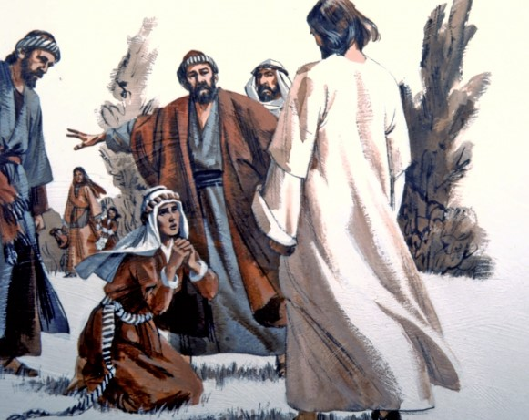

The Faith Of A Canaanite Woman
Then Jesus went thence, and departed into the coasts of Tyre and Sidon.
And, behold, a woman of Canaan came out of the same coasts, and cried unto him, saying,
Have mercy on me, O Lord, thou son of David; my daughter is grievously vexed with a devil.
But he answered her not a word. And his disciples came and besought him, saying, Send her away; for she crieth after us.
But he answered and said, I am not sent but unto the lost sheep of the house of Israel.
Then came she and worshipped him, saying, Lord, help me.
But he answered and said, It is not meet to take the children's bread, and to cast it to dogs.
And she said, Truth, Lord: yet the dogs eat of the crumbs which fall from their masters' table.
Then Jesus answered and said unto her, O woman, great is thy faith: be it unto thee even as thou wilt. And her daughter was made whole from that very hour.
Matthew 15:21-28
- 